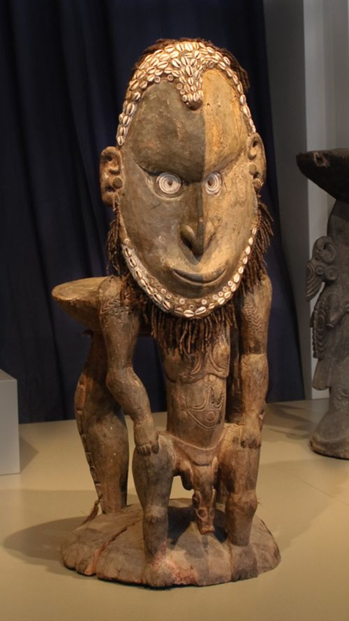
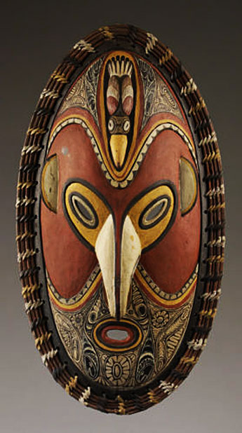
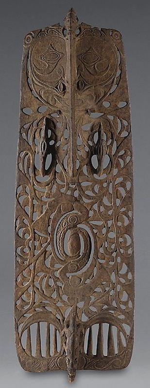

Location and Length
The Sepik River is one of the longest rivers in Papua New Guinea, stretching over 1,100 kilometres. It flows through the northern part of the country and is surrounded by dense rainforest and wetlands.
The Sepik River is one of the longest rivers in Papua New Guinea, stretching over 1,100 kilometres. It flows through the northern part of the country and is surrounded by dense rainforest and wetlands.
Many traditional villages are located along the Sepik River. People live in stilt houses and depend on the river for daily life. These communities maintain strong cultural traditions and customs passed down through generations.

The Sepik River is famous for its unique carvings, masks, and spirit houses. These artworks are used in ceremonies and represent ancestors and spiritual beliefs.


